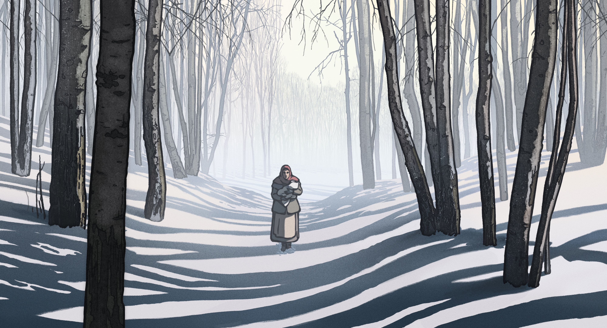
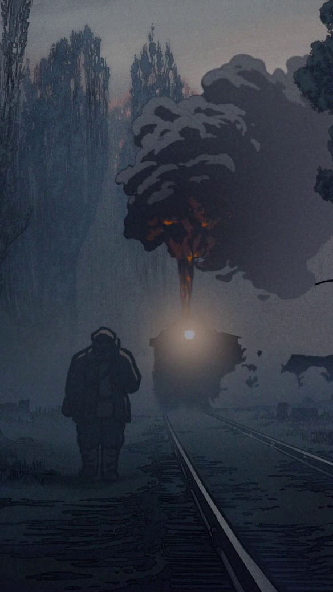

La plus précieuse des Marchandises
Directeur Technique - Pipeline - Outils - Supervision 3D
Entre 2021 et 2024, j'ai eu la chance de participer à la fabrication du film La Plus Précieuse des Marchandises de Michel Hazanavicius en tant que Directeur Technique du studio 3.0 Studio à Angoulême.



J'ai eu plusieurs rôles sur cette production. Le premier était la mise en place complète du pipeline et des outils pour les artistes.
- Mise en place du pipeline de production, centré autour de l'API Zou et du logiciel de suivi de production Kitsu.
- Développement d'un launcher personnalisé pour la récupération et la publication des fichiers de travail. L'idée derrière ce launcher était de simplifier au maximum l'étape de Publish, si souvent source d'erreurs pour les artistes. L'outil permet de publier en une seule étape son fichier de travail sur les serveurs du studio, de poster un commentaire et un statut sur Kitsu ainsi qu'une nouvelle preview si nécessaire.
- Développement d'un système d'import/export entre Blender et TVPaint avec Rashid Ghassempouri. L'animation clé étant réalisée sous TVPaint et l'assistanat sous Blender, nous avons développé un système d'exports des calques TVPaint et d'import sur Blender en conservant les calques et les images clés.
- Développement de nombreux addons Blender pour résoudre des problématiques de workflow autour du Grease Pencil. Ces petits outils étaient là pour simplifier le travail des artistes et leur permettre d'améliorer leur productivité sur Blender.
- Tracking automatique des changements pour le département editorial. L'outil permet de donner au monteur du film une liste des fichiers changés pour lui permettre de les intégrer si necessaire au montage.
- Synchronisation automatique des fichiers entre les différents sites de production : La production se déroulant entre plusieurs studios, notamment pour le Compositing. J'ai développé un outil permettant de récupérer automatiquement toutes les dépendances d'un fichier de compo (fichiers d'anim, de colo, décors...) pour les rapatrier en local et gagner en efficacité.

J'ai également supervisé la partie 3D du film, en veillant à la bonne application des processus et en aidant les artistes à résoudre les problèmes techniques rencontrés.